Securing kube-bind with Keycloak: A Production-Ready OIDC Setup
In this tutorial, I'll be showing you how to integrate Keycloak into kube-bind so that authentication is handled by an external identity provider instead of the embedded mock one.
If you've been following along from the previous posts, you know that kube-bind lets you project APIs from a provider cluster into a consumer cluster. To do that securely, it uses OIDC for authentication. In the quickstart guide, we used the embedded OIDC provider — which is great for tinkering locally, but absolutely not something you'd ship to production.
In production, you want a proper identity provider. One that manages users, groups, tokens, and sessions correctly. For this, we'll be making use of Keycloak.
Keycloak is one of the most widely deployed open-source identity solutions out there. It supports OpenID Connect (OIDC), has a nice admin UI, and is battle-tested. Since kube-bind speaks OIDC, Keycloak is a very natural fit.
Here is what we'll build:
graph TB
User((You / Consumer))
subgraph Provider["Provider Cluster"]
Backend["kube-bind Backend"]
Keycloak["Keycloak OIDC Provider"]
ProviderAPI["Exported API (CRD)"]
end
subgraph Consumer["Consumer Cluster"]
Konnector["Konnector Agent"]
BoundCRD["Bound CRD (local copy)"]
end
User -->|"1. kubectl bind login"| Backend
Backend -->|"2. Redirects to Keycloak"| Keycloak
Keycloak -->|"3. Issues token on login"| Backend
Backend -->|"4. Session established"| User
User -->|"5. kubectl bind"| Backend
Backend -->|"6. Install Konnector"| Konnector
Konnector <-->|"7. Syncs resources"| ProviderAPI
Konnector --> BoundCRDThe key difference from the dev setup is steps 2 and 3 — instead of clicking through a mock login screen, users are redirected to Keycloak's real login page. kube-bind validates the resulting tokens against Keycloak's OIDC discovery endpoint.
Prerequisites
You'll need:
- kind
- kubectl
- Helm 3.x
- The
kube-bindCLI — see Quick Start for installation
Note: We'll use port-forwarding here to keep things simple. A production setup would use a proper Ingress or Gateway with TLS. See Installation with Helm for that.
Step 1: Create the Provider Cluster
We need a Kind cluster with port mappings so we can reach both Keycloak and the kube-bind backend from our machine:
cat <<EOF | kind create cluster --name provider --config=-
kind: Cluster
apiVersion: kind.x-k8s.io/v1alpha4
nodes:
- role: control-plane
kubeadmConfigPatches:
- |
kind: ClusterConfiguration
apiServer:
certSANs:
- "provider-control-plane"
- "127.0.0.1"
extraPortMappings:
- containerPort: 8080
hostPort: 8080
- containerPort: 8443
hostPort: 8443
- containerPort: 6443
hostPort: 6443
EOF
Why the certSANs? Since we are exposing the API server on port
6443and using custom hostnames likeprovider-control-plane, we need to tell Kind to include these in its TLS certificates. Without this, both kubectl and the kube-bind CLI would reject the connection with a certificate validation error.
Then add some hostname aliases so we can refer to our services by name:
[!TIP] Fixing "Certificate is valid for..." Errors: If you see an error like
x509: certificate is valid for ..., not 0.0.0.0, it's becausekubectlis trying to connect via an IP that is not in the certificate. You can fix your current context instantly by running:
Step 2: Deploy Keycloak
We'll use the KeycloakX Helm chart from codecentric. This is a great community-maintained chart that uses the official Keycloak images.
Because we need to set some environment variables for the admin user, we'll create a small values-keycloak.yaml file. This is much cleaner than trying to pass complex strings via the CLI.
cat <<EOF > values-keycloak.yaml
fullnameOverride: keycloak
command:
- "/opt/keycloak/bin/kc.sh"
- "start-dev"
extraEnv: |
- name: KEYCLOAK_ADMIN
value: admin
- name: KEYCLOAK_ADMIN_PASSWORD
value: admin123
- name: KC_HTTP_RELATIVE_PATH
value: /auth
EOF
helm repo add codecentric https://codecentric.github.io/helm-charts
helm repo update
helm upgrade --install keycloak codecentric/keycloakx \
--namespace keycloak \
--create-namespace \
-f values-keycloak.yaml
You should see the following output:
Release "keycloak" does not exist. Installing it now.
NAME: keycloak
LAST DEPLOYED: Sun Feb 22 21:52:49 2026
NAMESPACE: keycloak
STATUS: deployed
REVISION: 1
TEST SUITE: None
NOTES:
***********************************************************************
* *
* Keycloak.X Helm Chart by codecentric AG *
* *
***********************************************************************
Keycloak was installed with a Service of type ClusterIP
Create a port-forwarding with the following commands:
export POD_NAME=$(kubectl get pods --namespace keycloak -l "app.kubernetes.io/name=keycloakx,app.kubernetes.io/instance=keycloak" -o name)
echo "Visit http://127.0.0.1:8080 to use your application"
kubectl --namespace keycloak port-forward "$POD_NAME" 8080
Wait for it to come up (Heads up: this chart deploys a StatefulSet, not a Deployment):
Patch the service to expose port 8443 for OIDC compatibility since we're technically running the cluster in our local machine.
kubectl patch service keycloak-http -n keycloak --type='json' -p='[
{"op": "replace", "path": "/spec/ports/2/port", "value": 8444},
{"op": "add", "path": "/spec/ports/-", "value": {"name": "oidc-compat", "port": 8443, "targetPort": "http", "protocol": "TCP"}}
]'
Port-forward so we can access the admin console:
Head over to http://keycloak.local:8443. You'll be redirected to the Keycloak login page:
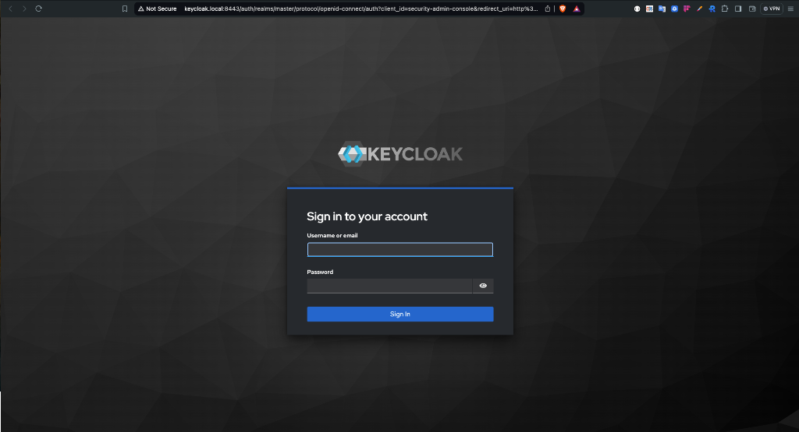
Log in with admin / admin123. You should see the Keycloak admin console.
Step 3: Configure Keycloak
This is the most important step. We need to set up a few things in Keycloak:
- A Realm — a logical namespace for our identity space
- A Client — representing the
kube-bindbackend - A Group — to control which users can bind services
- A User — so we have someone to log in as
Create a Realm
In the top-left corner of the admin console, you'll see a Manage realms option; click it. You'll see a list of realms, one of which is named master. We won't be using that one. Click on the Create realm button.
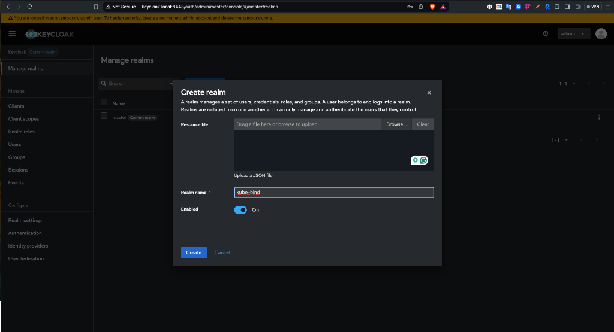
Name the new realm kube-bind and click Create.
Create a Client
This is the entry for the kube-bind backend application in Keycloak.
Go to Clients → Create client and fill in the following:
- Client ID:
kube-bind - Client type:
OpenID Connect
Click Next. On the capability config screen:
- Enable Client authentication (this generates a client secret)
- Keep Standard flow checked
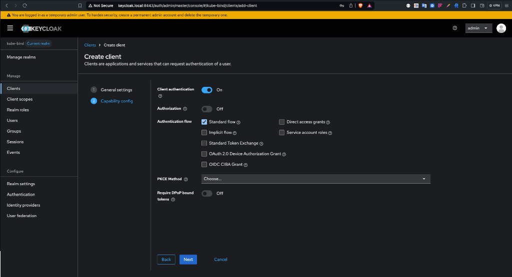
Click Next. On the login settings screen:
- Valid redirect URIs:
http://kube-bind.local:8080/api/callback - Web origins:
http://kube-bind.local:8080
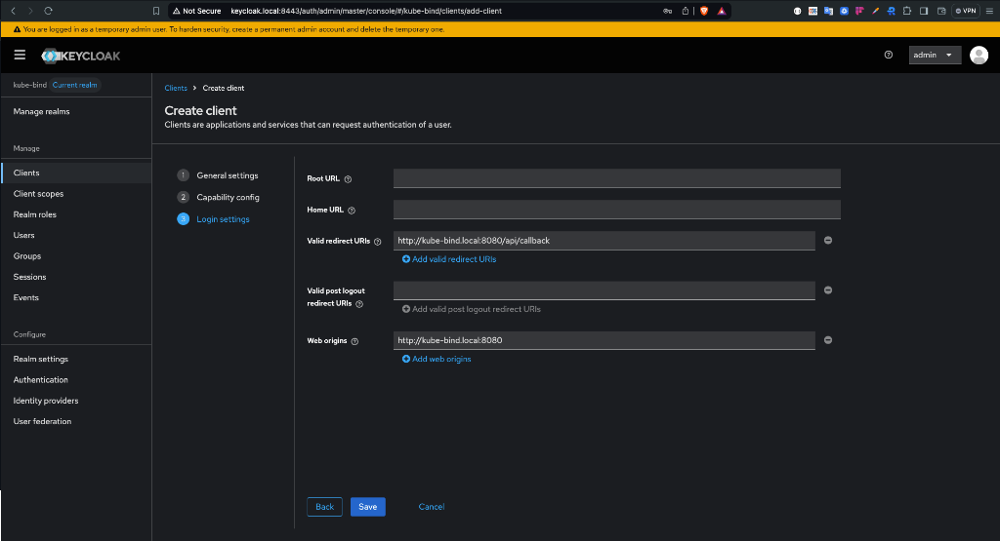
Click Save.
Retrieve the Client Secret
Now that the client is created, we need its secret to give to the kube-bind backend.
- Go to the Credentials tab at the top.
- Under Client Secret, click the copy icon to copy the value to your clipboard.
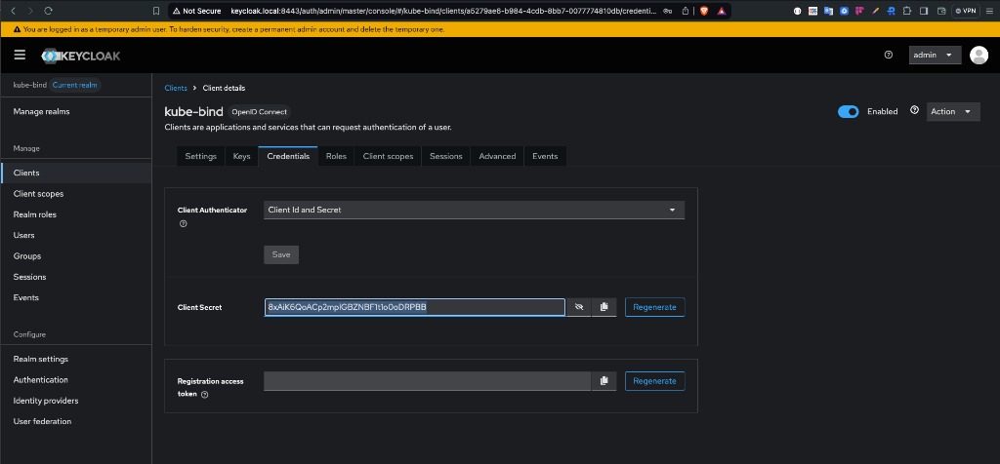
Note: If you don't see the Credentials tab, make sure Client authentication is toggled to ON in the client's Settings tab.
Create a Group
kube-bind lets you restrict who can create bindings based on OIDC group membership. Let's set that up.
Go to Groups → Create group, name it kube-bind-users, and click Create.
Create a Test User
Go to Users → Create new user and fill in a Username (e.g., platform-operator). Toggle Email verified to on, then click Create.
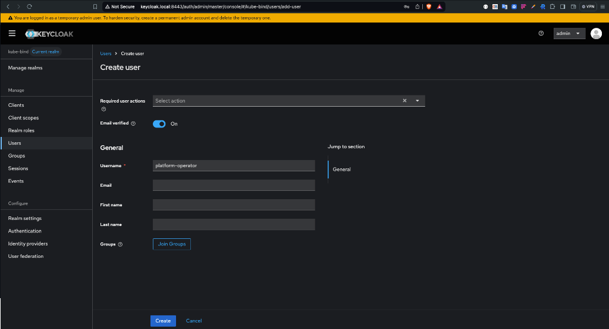
Go to the Credentials tab → Set password (something like password123, and disable temporary). Then go to the Groups tab → Join group → select kube-bind-users.
Technical Note on Groups: The
kube-bindbackend is hardcoded to look for a claim namedgroupsin your OIDC token. This is why the Token Claim Name in the Keycloak mapper MUST be exactlygroups. If you use a different name, the backend won't "see" your group membership even if you are in the right group!
Configure Client Scopes
Keycloak won't grant scopes like profile or groups unless they are explicitly assigned to the client.
1. Create the 'groups' Scope
Instead of adding a mapper directly to the client, we'll create a reusable scope:
- In the sidebar, click Client scopes → Create client scope.
- Name:
groups - Click Save.
- Go to the Mappers tab → Configure a new mapper → Group Membership.
- Name:
groups, Token Claim Name:groups. - Ensure Full group path is
OFF. - Click Save.
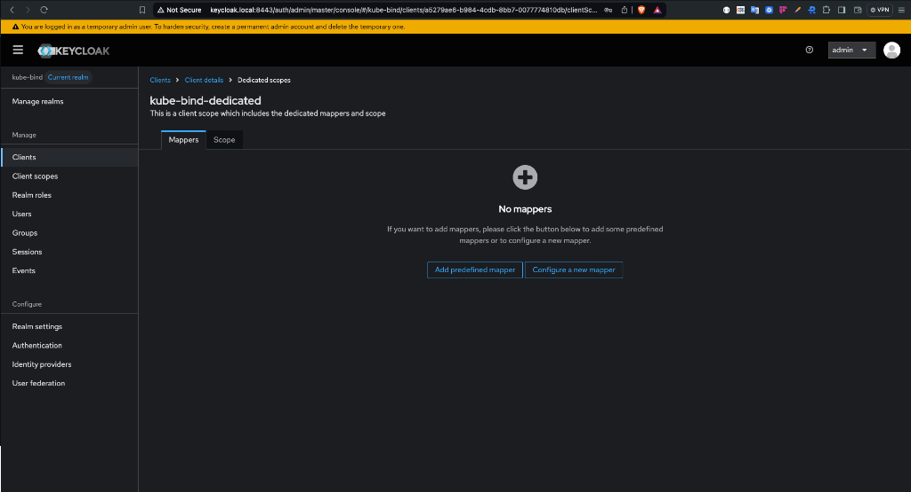
2. Assign Scopes to the Client
Now, we must tell the kube-bind client to actually use these scopes. Some of these are built-in to Keycloak, while groups is the one we just created:
- Go to Clients →
kube-bind→ Client scopes tab. - Click Add client scope.
- Select
profile,email, andoffline_access(these are built-in and already exist). - Also select the
groupsscope you just created.
Check the pagination! Keycloak's "Add client scope" dialog is paginated. If you don't see
profileor
- Click Add and choose Default.
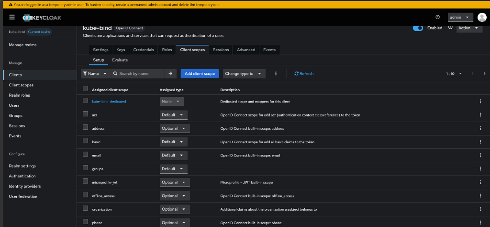
That's Keycloak done! The kube-bind backend will now be able to request and receive these scopes.
Step 4: Deploy kube-bind
Keycloak's OIDC issuer URL follows this pattern: http://<host>/auth/realms/<realm>. For us, that's http://keycloak.local:8443/auth/realms/kube-bind.
kubectl config use-context kind-provider
helm upgrade --install kube-bind \
--namespace kube-bind \
--create-namespace \
--set image.tag=v0.7.1 \
--set backend.externalAddress=https://provider-control-plane:6443 \
--set backend.tlsExternalServerName=kubernetes.default.svc \
--set backend.oidc.type=external \
--set backend.oidc.issuerUrl=http://keycloak.local:8443/auth/realms/kube-bind \
--set backend.oidc.clientId=kube-bind \
--set backend.oidc.clientSecret=cSmfhB3RNuetE8pgz1hDVjDHsDpc2r2v\
--set backend.oidc.callbackUrl=http://kube-bind.local:8080/api/callback \
--set backend.oidc.allowedGroups={kube-bind-users} \
oci://ghcr.io/kube-bind/charts/backend --version 0.7.1
Replace <YOUR-CLIENT-SECRET> with what you copied from the Keycloak credentials tab.
Heads up: Never paste secrets directly into shell history in production. Use a Kubernetes Secret or an environment variable via
--set backend.oidc.clientSecret=$OIDC_CLIENT_SECRET.
Networking Adjustment (Kind Specific)
Since we are running in Kind, the kube-bind pod doesn't know about the keycloak.local entry on your host's /etc/hosts file. Without this next step, the backend will try to reach itself on 127.0.0.1:8443 and fail.
We need to tell the pod that keycloak.local is actually the IP of our Keycloak Service.
# 1. Get the ClusterIP of the Keycloak service
KEYCLOAK_IP=$(kubectl get svc keycloak-http -n keycloak -o jsonpath='{.spec.clusterIP}')
# 2. Patch the backend to add a hostAlias
kubectl patch deployment kube-bind-backend -n kube-bind --type='json' -p="[
{\"op\": \"add\", \"path\": \"/spec/template/spec/hostAliases\", \"value\": [
{\"ip\": \"$KEYCLOAK_IP\", \"hostnames\": [\"keycloak.local\"]}
]}
]"
Verify everything is running:
Port-forward the backend:
Step 5: Export an API
Now let's give the consumer something to bind to. We'll use the Cowboys example CRD that ships with kube-bind:
kubectl apply -f https://raw.githubusercontent.com/kube-bind/kube-bind/main/deploy/examples/crd-cowboys.yaml
kubectl apply -f https://raw.githubusercontent.com/kube-bind/kube-bind/main/deploy/examples/template-cowboys.yaml
Verify it's exported:
Step 6: Bind from the Consumer
Create the consumer cluster:
Run the login command:
Your browser will open — and instead of the mock login page, you'll see Keycloak's real login form. Log in with platform-operator and the password you set earlier.
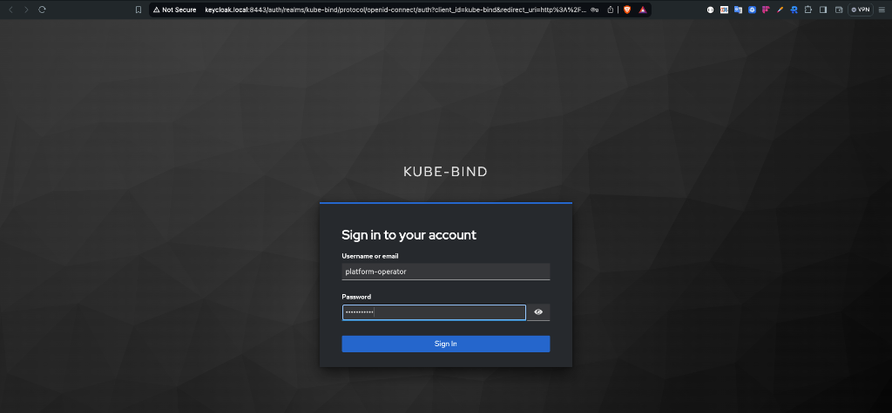
On your first login, Keycloak might ask you to Update Account Information (First name, Last name, and Email). This is a standard "Required Action" for new users. Just fill in the details and click Submit.
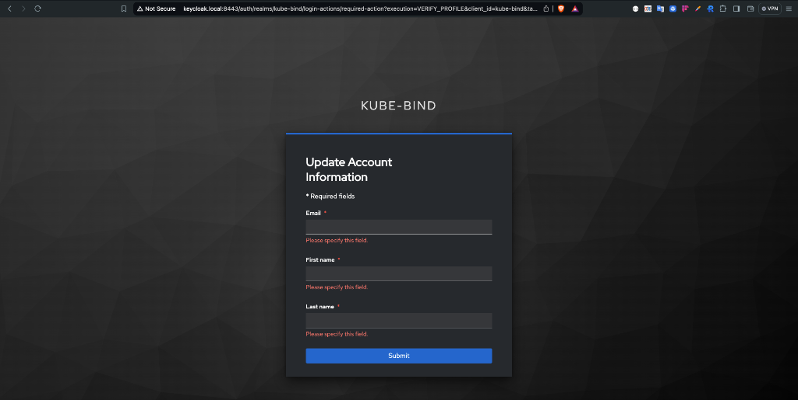
Once you submit your information, you'll see the classic
kube-bindsuccess page: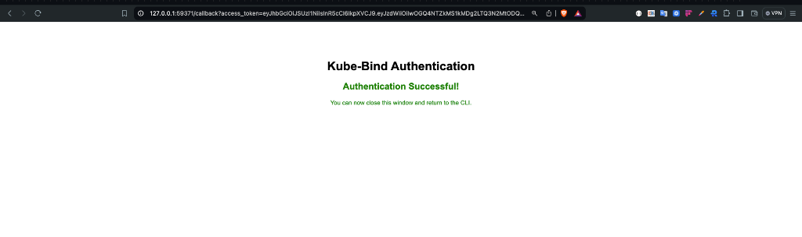
Connecting to kube-bind server http://kube-bind.local:8080...
Started local callback server at http://127.0.0.1:59371/callback
Opening browser for authentication...
🔑 Successfully authenticated to kube-bind.local:8080
Configuration saved to: /Users/olalekanodukoya/.kube-bind/config
Now bind the API:
The CLI will once again open your browser to confirm the binding. Since you just logged in, Keycloak's SSO will likely skip the username/password prompt and take you straight to the resource selection screen.
Select Cowboys in the browser UI and click Bind for CLI.
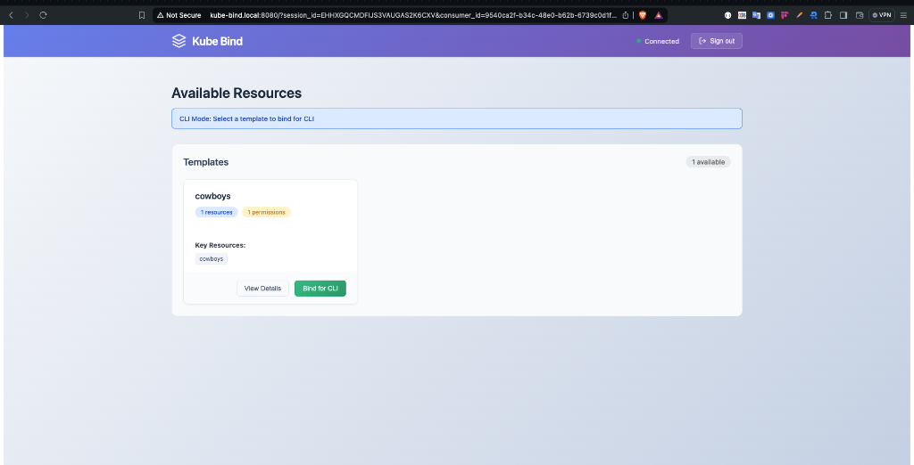
🌐 Opening kube-bind UI in your browser...
http://kube-bind.local:8080?consumer_id=ef0dc4ce-c867-48eb-ba6d-94178eefeca5&redirect_url=http%3A%2F%2F127.0.0.1%3A53613%2Fcallback&session_id=OV4RLFOX2V7HXSTY5FFJFGF4BX
Browser opened successfully
Waiting for binding completion from UI...
(Press Ctrl+C to cancel)
Binding completed successfully!
Created kube-bind namespace.
🔒 Created secret kube-bind/kubeconfig-2gf2s for host https://provider-control-plane:6443, namespace kube-bind-4fx0okhmvche
🚀 Deploying konnector v0.7.1 to namespace kube-bind.
Waiting for the konnector to be ready.............
✅ Created APIServiceBinding cowboys for 1 resources
Created 1 APIServiceBinding(s):
- cowboys
Resources bound successfully!
Step 7: Verify It Works
Check that the CRD is now available in the consumer:
Create a resource:
kubectl apply -f - <<EOF
apiVersion: wildwest.dev/v1alpha1
kind: Cowboy
metadata:
name: wyatt-earp
namespace: default
spec:
intent: "Keep the peace"
EOF
kubectl get cowboys
The resource is created in the consumer cluster and synced to the provider — all authenticated through Keycloak.
Conclusion
In this (relatively short 😄) tutorial, we've seen how straightforward it is to swap out kube-bind's embedded OIDC provider for Keycloak. With a real identity provider in place, you get proper user management, group-based access control, and token lifecycle management out of the box.
In a regular production setup, ensure you're using HTTPS everywhere and storing your Keycloak client secret in a proper secrets manager. The Installation with Helm guide covers the full production setup.
Check out the integration guides to see what you can actually bind once this is all set up:
- Crossplane: Cloud resources as a service
- CloudNativePG: Database-as-a-Service
- cert-manager: Certificate management as a service
Thank you!